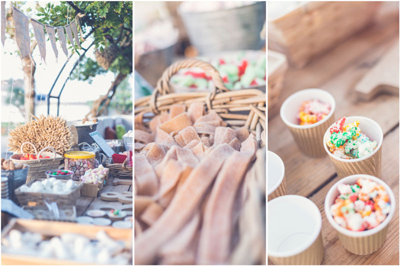
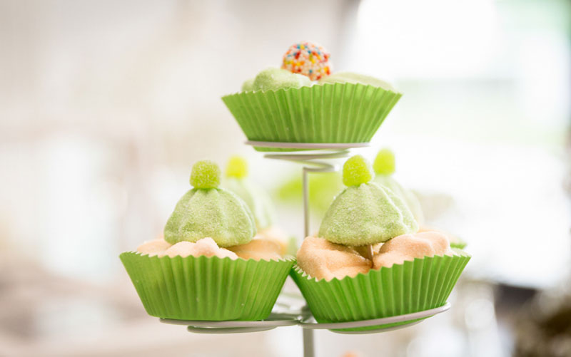

¿Qué es un Candy Bar?
Los Candy Bar, también llamados Candy Buffet, Sweet Table y Candy Table, son una mesa personalizada y decorada con todo tipo de gominolas, caramelos, dulces como cookies, cupcakes, alfajores y chocolates.Todo depende del tipo de evento y de la temática del mismo que soliciten los anfitriones. El Candy Bar de un bautizo nunca será igual al de una boda.

Materiales decorativos incluídos
Para que el Candy Bar quede espectacular ha de ser totalmente personalizado y muy llamativo. Cuidar cada detalle, combinar diferentes alturas, colores y que sea variado. Disfruta de este momento dulce con nuestra ayuda, y creamos el Candy Bar de tus sueños.